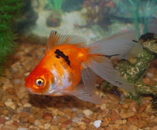

The Fantail goldfish is the western form of the Ryukin that possesses an egg-shaped body, a high dorsal fin, a long quadruple caudal fin, and no shoulder hump.
The Fantail goldfish may have either metallic or nacreous scales and normal or telescope eyes. Telescope eyes do not develop until the fish is 6 months old. Its fins are less developed than the Ryukin. It supports double anal and tail fins. The anal and caudal fins are well divided into two matching halves. Although generally considered a hardy goldfish, Fantails can be sensitive to prolonged exposure to low water temperatures. Keeping Fantails in an aquarium requires an ideal temperature of 73 to 74 degrees Fahrenheit